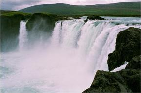
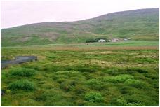
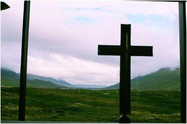

<< retur Godafoss og Thorgeirs kirke Dagen i dag skal være enkel. Efter endnu en god nat på herberget i Stöng har vi besluttet os for at opleve Gudernes Fos, så vi kører fra Stöng tidligt om morgenen ved 7 tiden for at være næsten sikre på at have vandfaldet for os selv, inden turisttrækket ankommer.
Vi er selv turister, men af den dvælende type som helst skal have god tid til alting, for at oplevelsen kan være optimal. Det er nok et af alderens privilegier at have lidt mere af den kostbare tid til fri disposition til at følge sin egen rytme. Og et vandfald kræver tid og ro, hvis man vil mere end blot fotografere og filme for at kunne dokumentere, at man har været der.
Vi er heldige at være de første på parkeringspladsen og nærmer os nu dette mægtige hestesko-formede fald med en ø på midten. Vi drages af lyden, som er voldsom, men melodiøs hvis man sætter sig ned og lytter, og det gør vi tæt på kanten, hvor vandet hovedkulds styrter sig i afgrunden.
 se video > Godafoss
Det var her, at Thorgeir Thorkelsson (født i 940) kastede de hedenske gudestatuetter i vandfaldet ef-ter kristendommens indførelse i 999 eller år 1000. Det var Thorgeir selv, der havde truffet beslut-ningen på Altinget, hvor han i en årrække havde fungeret som en meget dygtig lovsigemand fra 985 til år 1001. Thorgeir boede på sin gård ved Ljosavatn, hvor han havde et lille tempel - et gudehov med plads til gudebilleder og evt. offermåltid i fællesskab, og han rejste hvert år den lange vej over fjeldet til Altinget i syd for at forkynde landets love på Lovbjerget, og disse love skulle kunne reci-teres udenad.
Inden Thorgeir traf sin vigtige beslutning om, at Island skulle være
kristent, lagde han sig i sin teltbod på Altinget under sin skindfrakke
i et helt døgn og tænkte sig grundigt om. Det var en stor
beslutning, så han behøvede god tid. Men da både
Norge og Danmark var blevet kristne lande, har det givetvis indflueret
beslutningen væsentligt. Island skulle kristnes, men det skulle
være tilladt at blote i det skjulte, og praksis med at spise hestekød
og at sætte uønskede børn ud i fjeldet blev også
accepteret i en overgangsperiode. Thorgeir lod forstanden tale, og set
i bakspejlet var det den rigtige beslutning, han traf, da landet ellers
nemt kunne være blevet splittet i to dele - en med en kristen
lov og en med en hedensk lov.
Det blev undgået, og nu kunne en massedåb i Thingvallavatns kolde vand have været den mest nærliggende mulighed til at fejre dagens beslutning hin junidag, men de fleste valgte den varme laug i Laugarvatn på rejsen hjem.
Pudsigt
nok havde der været kristne munke på Island allerede 150-200
år før beslutningen på Altinget. Det var keltiske
munke, som med hjertet havde valgt at følge Jesus Kristus, og
de sejlede så til Island - langt ude i ødehavet for at
søge Gud der, ligesom ørkeneremitterne i 300-tallet drog
ud i Ægyptens ørken. Den keltiske kristendom var direkte
inspireret af disse gamle ørkenfædre, og derfor er keltisk
kristendom også meget inspireret af naturen. Længselen efter
at finde øde steder uden hærgende vikinger har drevet munke
fra Irland og Scotland til Island allerede i slutningen af 700-tallet.
Da landnamsmændene begyndte at ankomme til Island, brød
munkene brudt hastigt op uden at efterlade sig synderlige spor bortset
fra visse stednavne på Østkysten af Island, som vidner
om, at de har været her. Det er navne, hvor papa indgår,
som f.eks i Papey, Papafjardaros
Vi sidder stadig ved Godafoss og lytter og jeg kan ikke lade være med at tage Martin A Hansens bog Rejse på Island op af rygsækken og læser følgende passage højt for min kone og vore venner: ” En dansker synes ganske vist særlig elendigt stillet over for et stort vandfald, hvis vældige lyd ikke er støj, ikke larm, ikke gny, men snart bliver tavshedens store tempel. Vi er uden vandfalds-kyndighed. men jeg tror fossens og brændingens magt er så stor, at det er lige meget om man er stedvant eller ikke. Forudsat blikket nogle minutter hænger ved det styrtende vand går det nok folk ens.
Efter en stund gør fossen i sin uanfægtelige vælde først verden og dens indhold forhenværende. Lidt efter bliver selve det synlige og hørlige naturspil til åndsfraværelse. Det ses og ses dog ikke. Betragteren henfalder i en ejendommelig skøn dorskhed, der kan synes at være af højt åndeligt værd, men måske snarere er diablosk. Et fristelsens sted, ikke et forklarelsens. Den hensunkne gæst styrter sin fornuft i Fossen som fordum Thorgejr Gode fra Ljósavatn styrtede sine gudestøtter deri. Måske med modsat mening. Thorgejr kunne man sige, befriede en forstandighed derved. Og måske gav han fossen, hvad fossens var, for kan hænde det var fosseguder, han havde.
Den af fossen medrevne betragter ser den og ser den ikke, men ser en meningsfuld tomhed bag den, en uklar vorden. Noget mægtigt anes, man får ikke at vide hvad. Men måske om man sidder der natten over. Da måske bliver kontemplationen åben nok, hellige råd kommer, påfund får guderøst.
Er der nogen bag fossen må det være en dæmon eller Gud, måske af den smukke Frøjs væsen, og til hvem ekstasen hører, også seksuel ekstase som en floks fælles og vilde foreteelse. Eller er det en gudinde, der bor i fossen, ikke en Pallas Athene, men jordmoder, udflydende og mægtig, lysten efter enhver som vil synke hen og flyde ud. I fossen bor en af tankens gamle fjender.” Da jeg første gang læste dette afsnit under en rejse på Island i 1972, fik jeg en enorm trang til at overnatte ved Godafoss og tomlede fra Akureyri og ankom til Fossen en aften ved 22 tiden.
Jeg var alene ved faldets kant. Jeg ville undersøge, om kontemplationen kunne blive så åben, at hellige råd kom til mig, og nu var chancen der for en nat alene i højlandet sammen med fossen. Jeg så i fossen en mulig læremester, som måske kunne lære mig hengivelsens svære kunst. Det var tydeligt, at den kunne noget, som jeg ikke kunne. Den kunne styrte sig hovedkuls ud over kanten og nyde faldet med udsigt til infernoet lige under. Jeg sad på kanten af vandfaldet og fulgte et bestemt punkt i vandmasserne lige før det styrtede i dybet - stilheden i selve faldet - hvorefter jeg blev svimmel i mødet med vandinfernoet, hvor jeg blev hvirvlet rundt uden at kunne finde fodfæste.
Som natten skred frem, vågnede angsten i mig, og det, der var startet som en voldsom fascination, blev forvandlet til et inferno af angst. Dæmonerne lurede i stemmerne bag Fossen < se video. Min læremester var blevet en tugtemester, og jeg fortrød bitterligt min udflugt og fandt et sted at rulle soveposen ud på det hårde grus i behørig afstand fra faldet. Jeg rullede mig sammen i fosterstilling. Faldets mulighed var blevet til umulighed. Jeg følte mig som en håndfuld støv, der kun opretholdt livet på grund af et heldigt tilfælde. Når som helst kunne jorden åbne sig under mig, og jeg ville styrte i døden. Der var ingen Gud den nat. Jeg følte mig helt alene i et koldt univers, hvor liv og død kun var bestemt af naturens kræfter og tilfældets luner. Livet selv oplevede jeg som et heldigt eller uheldigt biprodukt af stjernedannelsesprocessen. Da vi er blevet til i et univers med evighedens tidsperspektiv og materiens endelighed, har vi begge dimensoner i os. Stjerner fødes, stjerner dør. Mennesker fødes, mennesker dør. Næste morgen tidligt skrev jeg et lille digt, som lyder sådan: Fossen hvæsser sine knive
ved min hjerterod.
Hjejlen klager stille
mangler livets mod. Beskæmmet vandrede jeg ud til vejen og blaffede til Reykjahlid. Fossen havde på sin vis besejret mig, og jeg havde ikke afluret den dens hemmelighed. Jeg følte mig meget lettet, da jeg nåede ind til bebygget område i en kendt og tryg verden.
Vandfald skal omgås med omtanke; de tryllebinder en og lokker
en på afveje. Der gik dog ikke mere end et års tid, før
jeg igen fik lyst til at lære et mindre dæmonisk vandfald
at kende ved nattetid
Denne gang overnattede jeg på fjeldet i Nordvestisland ved en
mindre bjergelv med et lille fald, som rislede saligt. Jeg var kommet
med båden fra Isafjördur og var sejlet helt ind i bunden
af Isafjardardjup. Herfra ville jeg så tomle over fjeldet Steingrimsfjardarheidi
til Bjarkalundur, men blev nødt til at overnatte under åben
himmel, da ingen biler kom forbi den aften. Sent på aftenen rullede
jeg min sovepose ud i nærheden af fjeldbækken og satte mig
nu ved bækken for at slappe af og lytte til dens rislen. Medens
jeg sad her, blev jeg helt tanketom. Jeg følte, at jeg blev til
et træ, der havde slået rod ved bækken. Tiden forsvandt,
og jeg blev eet med bækkens lyde og følte styrken ved at
stå her med rødderne dybt nede i klippegrunden og kronen
vendt mod himlens lys. Jeg tror, at jeg sad der en time eller to, hvor
alle tanker var væk fra mit sind. Da jeg rejste mig igen, var
al træthed blæst væk, og med fornyede, vågne
sanser oplevede jeg en ethed med naturen - oplevede et ”gudsnærvær”,
der fik mig til at se de intense farver, som midnatsolens sidste stråler
kastede på landskabet. Jeg følte mig omsluttet af altet,
og jeg fik del i en ubeskrivelig fred og glæde. Liv og død
var en helhed, og tiden var gået i stå i et saligt, evigt
øjeblik.
Mit forhold til vandfald var genoprettet og som Martin A Hansen så rigtigt udtrykte det, er der både noget dæmonisk og noget guddommeligt ved disse fald, hvor en af tankens gamle fjender bor, og man kan føle sig som i et tavshedens tempel.
Jeg er faldet i staver og bliver mindet om, at vi sidder ved Godafoss i vennekreds, og duften af kaffe bringer mig tilbage til nuet. Vi drikker kaffe og spiser en klemme brød med lidt fårepostej samt en tomat og til dessert en skive ost og lidt frugt. Vi sidder godt på den lille lavahylde med et fint kig til faldet og lidt i læ for vinden. De første turister er begyndt at dukke op, og en ung mand går helt ud til kanten af faldet for at fotografere lodret ned i infernoet. Det svimler for mig, og endnu engang begynder vandfaldsfilmen at rulle:
Jeg er tilbage i 1977, hvor jeg var på vandretur med Ferdafelag Islands ind i ødemarken til Eldgjá, hvor Islands største vulkanudbrud i historisk tid fandt sted mellem 934 og 940 - det år, hvor lovsigemanden Thorgeir blev født.
Vi vandrede igennem den gamle spalte, hvor jorden slog en kæmpe revne dengang, hvorfra den glødende lava væltede op igennem 6 år og dækkede et areal på over 781 km2 mod Laki´s på 600 km2. Vi kom ind til vandfaldet Öfærufoss, som faldt i to forbundne fald ned i spalten. Over det nederste fald var der en lavabro, som vi gik over. Få år senere styrtede den ned efter et mindre jordskælv i området.
Vi gik op langs kanten af faldet og nød naturens smukke komposition
og forsøgte at komme på gode skudvinkler med vores fotografiapparater.
Det var der også en ung dansker, der gjorde. Han var sammen med
sin kone og deres to børn, og vi var de eneste danskere i gruppen
af islændinge. Den unge mand gik helt hen til skråningen
ned mod faldet for at få et snapshot, og det lykkedes, men samtidig
rutscher han ned ad grus skråningen mod faldet med accellererende
fart. Jeg tror ikke mine egne øjne, men han er på vej mod
den visse død. Lige inden det lodrette fald ned til poolen, hvor
der ligger store skarpkantede lavablokke, får han fat i et fremspringende
klippeparti og hager sig fast der. Vi prøver at råbe opmuntrende
ord til ham, men lyden fra fossen gør det uklart, om han kan
høre os. Lederne på turen er dog resolutte og råber
af al deres kraft, illustreret med tegn og fagter, at de vil skaffe
et reb fra bussen, og han skal bare holde sig fast, så kommer
hjælpen. De bedste løbere på holdet bliver sendt
tilbage til bussen efter rebet og ankommer efter ca. en time, som føles
uendelig lang - ikke mindst for mennesket på skråningen.
Løberne kommer stærkt forpustede tilbage med rebet, som
bliver firet ned til manden, og han må så prøve at
få det rundt om livet og slippe taget i klippen med den ene hånd.
Det er nervepirrende for alle ikke mindst hans kone og børn,
som står med tilbageholdt åndedræt og følger
redningsaktionen. Det lykkes for danskeren, at bevare roen og få
fastgjort rebet om livet og bundet en knude, så han kan trækkes
op ad skråningen i sikkerhed til en lykkelig genforening med sin
familie. I det øjeblik han når kanten, bryder klapsalverne
løs, og han er dagens mand, som vi alle har lyst til at tale
med og bære i guldstol. Han var tæt på at dø,
men blev reddet i sidste øjeblik. Vi kappes om at trykke ham
i hånden og lykønske ham med det liv, han var så
tæt på at miste.
På turen tilbage til bussen følges jeg med ham, og han fortæller, at han på intet tidspunkt under nedturen i glidefaldet havde mistet håbet om at redde livet, og derfor kunne han gribe den eneste chance, der var, med en overordentlig præcision. Han er dybt rystet, men glad for at være i live og meget taknemmelig over for sine islandske redningsmænd. Mon ikke han ved den lejlighed har fået et fornyet syn på livets mirakel og har fejret en ekstra fødselsdag.
Den første busfuld turister er nu blevet læsset af ved Godafoss, og vi beslutter os for at bryde op og prøve at følge i Thorgeirs fodspor til hans gård og gudehovet ved Ljósavatn ikke langt fra Faldet.
Inden afgang er jeg også henne og kikke ned, men jeg lægger mig på maven og trækker mig frem mod kanten. Nu frygter jeg kun at miste hovedet og overvejer et øjeblik at ofre mine egne gudsbilleder, som hin Thorgeir gjorde. Thorsgeirs kirke <Se video
Vi forlader Godafoss ad hovedvej 1 mod Akureyri og når efter få kilometer en lille vej på venstre hånd, som fører ned til Thorgeirs gård og kirke. Foran kirken står der et stort gyldent kors, som markerer, at dette her er en speciel kirke. Vi parkerer og kan se, at kirken er helt ny, indviet i år 2000 til minde om indførelsen af kristendommen i år 1000.

Fra kirketomten kan vi se over til Thorgeirs gård på fjeldfoden mod syd godt i læ for vinde sydfra. Nær gården har Thorgeirs gudehov så ligget på en lille forhøjning, men tiden har slettet alle spor. Det gør heller ikke noget. Gårdens beliggenhed er den samme nu som dengang - blot er byggematerialet nu beton, hvor det dengang var græstørv og lavablokke og en enkel trægavl hos de rigeste bønder som Thorgeir. Vi nyder udsynet over de frodige marker og engstrækninger ned mod Ljósavatn i øst. Sådan så det også ud på Thorgeirs tid.
Da vi går ind i kirken, fornemmer jeg med det samme en helt speciel stemning i det store lyse rum, hvor lyset vælder ind gennem en glasvæg bag alteret, som åbner op for udsynet mod Ljósavatn (Lys søen) og fjeldene mod både nord og syd.

På alterbordet står et sort kors flankeret af to lysestager. Der er lys bag korset (se video) med sol og drivende skyer, som kaster deres skygge på fjeldsiderne for derefter at ile over dalens bund. En flok vildgæs kommer flyvende og lægger an til landing i Ljósavatn, og vi sætter os andægtigt i stilhed og lytter til en smuk kvindestemme, der synger salmer på islandsk akkompagneret af enkel musik på klaver og cello. Lyden kommer fra et højttaleranlæg, og det er Ellen Krístjánsdóttir, der synger på sit smukke islandske tungemål. Jeg lytter intenst efter ordene og føler mig løftet, så øjeblikket får evighedskarakter.
Hun synger (lyt!) Anda thinni lát æ mér stjórna,
audsveipan gjör huga minn.
og á thinnar elsku vegum
inn mig leid i himin thin. Her
er nogen hjemme i dette stilhedens tempel, som gør oplevelsen
radikalt anderledes end ved Godafoss. Efter første salme lyder
nu den godnatsalme, som min moder sang for mig, da jeg var lille. Nu
lytter jeg til den islandske udgave:
Nú legg ég augun aftur (lyt !)
(nu lukker sig mit øje) - og det gør det, og jeg falder ind i en salig tilstand af drømmende uskyld. Andet vers er digtet af Mathhias Jochumsson, som også digtede Islands nationalsang: ”Ó Gud vores lands”. Jeg lytter til enheden mellem ord og toner: Ég fel i forsjá thina.
Gud fadir, sálu mina,
thvi nú er komin nótt.
Um ljósid lát mig dreyma
og ljúfa engla geyma
öll börnin thin, svo blundi rótt. Øjeblikket kommer bag på mig, som alle de største øjeblikke i mit liv har gjort, hvor jeg er blevet grebet af en kraft, der var større end mig selv. Det har været forelskelser, vandfald og kirker, som har lært mig hengivelsens svære kunst, som mest er en øvelse i at gribe, når situationen er der. Som den unge dansker, der, i tillid til livet, formåede at gribe om klippen på vej mod den sikre død.
I menighedssalen, som åbner op ind til kirkerummet, går en ung kvinde og dækker bord. Det er hende, der har sat Ellen Kristjánsdóttirs salmer på lydanlægget. Der skal være en sammenkomst om eftermiddagen, og der dækkes op til utroligt mange efter dette øde sted at dømme, men kirken trækker folk til. Det er vigtigt, at der til korsets lodrette akse er en vandret, som er vendt mod menighedens fællesskab.
Den unge kvinde fortæller mig, at hun har en bachelorgrad i en naturvidenskabelig disciplin, men at hun nu vil læse teologi og gerne være præst i denne kirke. Jeg håber, at hendes ønske går i opfyldelse, ellers stiller jeg mig gerne til rådighed. Copyright Morten Stender << retur | |